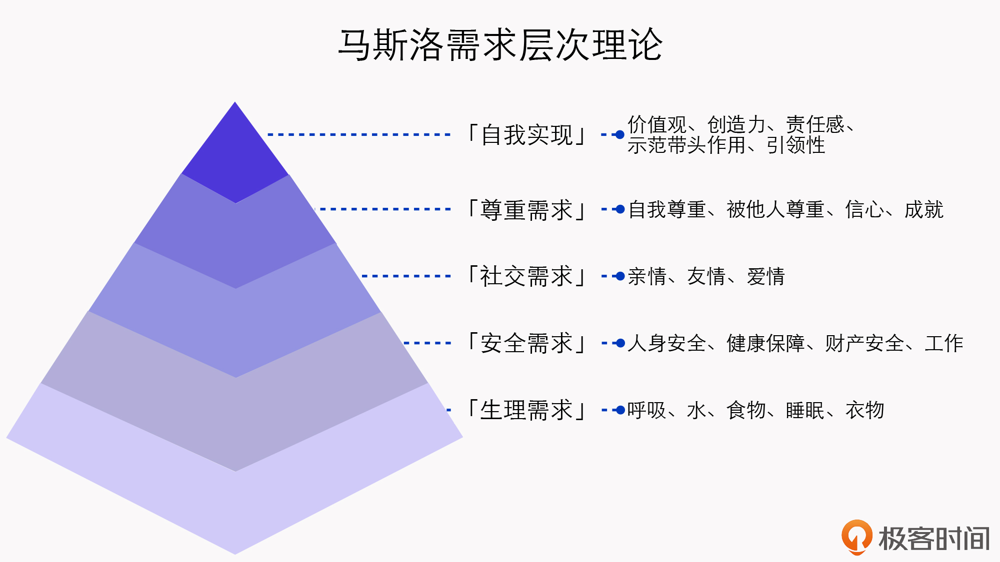

- 00 开篇词 短视频时代下，怎么把握好变现风口？.md.html
- 01 爆款短视频的底层逻辑：用心拍的短视频为啥没人看？.md.html
- 02 爆款短视频的底层逻辑：如何轻松打造自我特色？.md.html
- 03 精益创业法：如何快速跨过从0到1这道坎？.md.html
- 04 SWOT法：这么明显的个人优势你为啥就是看不到？.md.html
- 05 效用函数法：如何用量化的方式进行高效创作？.md.html
- 06 二次创新实验法：如何打造个人的差异化定位？.md.html
- 07 平台定位：如何选择最适合自己的创作平台？.md.html
- 08 如何快速找到各大短视频平台的正确切入点？.md.html
- 09 选题（上）：如何利用思考清单找到合适选题？.md.html
- 10 选题（下）：如何为不同的内容定制合适选题？.md.html
- 11 优劣分析法：如何快速筛选适合创作的视频素材？.md.html
- 12 标题（上）：如何利用微创新巧妙找到爆款标题？.md.html
- 13 标题（下）：如何用对号入座的方式抓住标题亮点？.md.html
- 14 视频封面（上）：如何快速抓住用户注意力？.md.html
- 15 视频封面（下）：如何传递最有价值的信息？.md.html
- 16 视频剪辑：如何轻松掌握视频化剪辑的三大公式？.md.html
- 17 效果反馈法：剪辑很容易，为什么你却一直学不会？.md.html
- 18 剪辑对比（上）：如何避开常见的短视频剪辑陷阱？.md.html
- 19 剪辑对比（下）：如何利用剪辑技巧提升视频质量？.md.html
- 20 拉片法：用电影创作的方式学习爆款短视频运营技巧.md.html
- 21 用户留存率：为什么粉丝很多但忠实拥趸却很少？.md.html
- 22 点赞率（上）：如何有效提升短视频的点赞量？.md.html
- 23 点赞率（下）：三种方法轻松提升用户对内容的认可度.md.html
- 24 上瘾机制：为什么视频观看量很高却没人留言？.md.html
- 25 避坑指南：为什么很多短视频账号中途做不下去了？.md.html
- 26 如何找到适合自己的短视频变现模式？.md.html
- 27 多元化变现：如何明确不同创作阶段的变现任务？.md.html
- 28 多内容变现：不同内容的主打变现模式是什么？.md.html
- 结束语 一切成大事者，都是终身学习者.md.html
- 捐赠
01 爆款短视频的底层逻辑：用心拍的短视频为啥没人看？
你好，我是周维。
从业6年来，我发现刚开始做短视频的人都会问一个问题，就是为什么那些制作看着特别普通的短视频能够成为爆款，而自己花了好几个小时，甚至是好几天用心创作的视频，观看者却寥寥无几呢？
我们来看一个具体的例子。就像这个Vlog，拍摄者只是拿着手机对着自己拍，用很简单的方式去记录自己所受到的情感创伤，制作水平并不高，甚至后期字幕也可以依靠剪辑工具一键生成。与运用了专业的镜头语言、场景转换等高质量的视频相比，这条短视频看起来没有任何优势，但是它的观看量却能突破百万，留言几万条。
那么，这种好像不用花费精力就能拍的视频，能够成为爆款的底层逻辑究竟是什么呢？
我认为是“基本盘”。基本盘就像是计算机的操作系统、网络协议，你可以把它理解为是一个事物最本真的样子，是不管在什么情况下都丢不掉、夺不走的东西。
在我看来，一个短视频能够受到欢迎的前提就是要拥有自己的基本盘，而后才是制作水平的高低。这个道理也很容易理解，我们喜欢高制作水准的好莱坞大片，但这并不妨碍我们喜欢小成本制作但感情真挚的影视剧，因为它们都迎合了观影人群的不同审美需求。
理解了这一点之后，我们再重新来思考一下刚才的问题：为什么在你眼里看似制作简单的视频内容，有时候要比制作精良的短视频更受欢迎？
其实，这个问题的逻辑就是错的。当我们用“制作水平”这个维度来衡量短视频受欢迎程度的时候，那么作为对照的案例，其基本盘也需要是以制作为维度。就拿前面这个例子来说，情感向短视频之所以受到了欢迎，是因为它拥有让观众产生共鸣的基本盘，那么作为对照的案例，同样也需要是情感向的短视频，而非什么制作精不精良。
所以现在你理解了吗？基本盘就是一个短视频能够成为爆款的根本，或者说不可或缺的因素。那么接下来，我就会花两节课的时间，带你找到隐藏在那些爆款短视频背后的“基本盘”，即马斯洛需求层次理论、编程思维、稀缺价值法、改良创新法。
今天这节课，我们先来看看马斯洛需求层次理论、编程思维这两种理论在爆款短视频中是如何应用的，以此去看清不同内容类型的短视频能够成为爆款的决定因素，从而理解在创作时首先要考虑的着眼点是什么。
马斯洛需求层次理论：打造爆款的底层创作方法
这个理论你应该比较熟悉，它是美国心理学家亚伯拉罕·马斯洛创造一种金字塔式的需求理论，由下至上分别是生理需求、安全需求、社交需求、尊重需求以及自我实现，分别对应了人在现实生活中不同阶段、不同时期所面临的核心诉求。

巧妙的是，短视频事实上就是现实生活的投射，因此不同爆款内容的背后其实都对应着马斯洛原理的不同核心诉求。下面，我们就来一一解析下这五种需求和据此外延的短视频内容，以此来清晰地看透一个爆款短视频的基本盘。
生理需求
最底层的是生理需求。顾名思义，它代表的是人类赖以生存的根本，比如食物、水、呼吸、睡眠，等等。
那么在短视频领域，我们要如何去判断生理需求的应用呢？
在我看来，大部分的爆款短视频，其基本盘都对应着用户对这层需求的现实投射，因为生理需求是人通用的一种底层需求，谁也离不了。举个简单的例子，各大短视频平台上最受欢迎的内容领域，一定会有美食、赚钱知识等等，它们分别对应了这层需求中的食物、生存。
生理需求就像是盖房子时要打造的地基、作画时要选取的底色，在短视频领域中，同样也要基于人最基本的需求进行创作，这是打造成爆款内容的基本盘之一。
如此，当你明白了这一点之后，在创作时其实就可以先去找到能抓住所有用户生理需求层次的关键点，比如就像前面提过的美食领域，然后你再在这个已经得到过验证的创作领域上，根据自己的具体条件进行二次创新，这样你的创作就会变得比较简单和有目标参考了。
安全需求
第二层是安全需求，每个人都会本能地去避免或摆脱外界威胁，以求获得安全感。在马斯洛原理中，它解释为人身安全、财产安全、道德保障，等等。
而放在短视频领域中，我们归结起来其实主要有三点：
- 渴望得到安全、摆脱危险，如身体健康、人身安全等。
- 受到保护、免除焦虑与恐惧，如母婴知识、职业成长类。
- 与“失去”关联的内容，如财富理财、情感指导类。
给你举个例子。在疫情下，我们现在出门戴口罩是一件很正常的事情，但是不正确的佩戴方式所带来的风险很大，因此有些创作者就从如何正确佩戴口罩的角度，去告诉用户别忽视一些重要细节。这样的视频也成了用户关注的热点，而其背后的底层逻辑就是人们渴望得到安全、摆脱危险。
这里请注意一点，当你要做一个切合用户安全需求的短视频时，你需要做好“失去”与“获得”的权衡，也就是这条内容对外传递的观点一定是：如果你不重视就会失去安全，而一旦重视了就会获得安全。因为这就像一枚硬币的两面，它是不可分割的。而且每个人不管在什么样的情况下，一定都正在“失去”与“拥有”，而且往往也正是因为这两方面，才会让我们感受到真实的存在。
社交需求
社交需求又可以理解为情感需求，在马斯洛原理中强调的是亲情、友情、爱情等各种感情的诉求。
为了便于你更好地理解这层需求，这里我想引用下哲学家梁漱溟的一段话：
人的一生要处理好三层关系：第一层是自己与世界的关系；第二层是自己与他人的关系；第三层是自己与自己的关系。
也就是说，在短视频创作中所体现的社交需求，就是用户可以通过视频所展现的情感关系，观察到自己与世界、他人与内心的关系。
比如，这条爆款短视频的内容是讲述了父母为孩子做康复训练的过程 ：视频中，儿子的年纪似乎并不小了，但是因为需要进行康复训练，年迈的父亲佝偻着背搀扶着儿子，而母亲则是趴在地上用手挪动儿子的双脚向前走。
这个视频一下就击中了我的内心，因为它让我看到的是我们与父母的关系，我能从视频中真实地感知到：不管孩子多大，在父母的眼中永远都是孩子，父母对孩子的爱永远都是纯粹与无私的。
这就是利用情感需求这一基本盘来打造爆款的关键因素。
说到这里，我们也回过头来看看一开始举的那个例子：短视频创作者用Vlog的形式记录了自己的情感经历，面对镜头诉说自己内心最真实的独白。这些内容能成为爆款，就是因为它符合了马斯洛原理中的情感需求，我们能够在拍摄者所讲述的这段关系中看到自己的样子，产生共鸣。
所以，当你去用马斯洛原理来判断一条爆款短视频是否符合情感需求时，就可以用前面提到的这三层关系来对号入座。同样，当你在创作情感类的短视频时，你首先就要考虑清楚，你创作的内容内核可以反映出什么情感关系，然后再去思考具体的呈现形式。
尊重需求
对于尊重需求，我们可以从内部与外部两个方面来理解：
- 内部就是指自尊，代表着人渴望拥有自信、成就感、满足感等心理；
- 外部就是指他人对自己的尊重，代表着人渴望得到认可、信赖，以及找到自我价值。
尊重需求在短视频领域里，也可以分为这两种。
首先是对内的，这类爆款视频会通过行为上的自我证明，比如展现过往经历等，来获取自尊、自信和成就感。像一些记录个人生活的Vlogger，如清华圆圆陪你读英语等，他们就是记录自己真实的经历，来对外传递出自己的信念、目标、梦想，从而树立自信。
其次是对外的，这类爆款视频会通过展现一些独特的能力、优秀的成绩等，来获得外界的认可。比如说，在抖音上挑战各种难度的博主玲爷，就是这个类型的代表。
除了展现个人优势之外，在短视频内容中，尊重需求也可以是一种动态的自我展示。比如展示自己由坏到好、由幼稚到成熟，或者是自己克服困难、解决问题的过程，等等，这都是尊重需求在短视频内容中最佳的表现形态。
自我实现需求
在马斯洛原理中，最后一层是自我实现需求。自我实现需求其实与尊重需求有本质的区别，前者强调的是结果，也就是一定达成了自己的目标，拥有了最理想的结果；而后者则是展现一种不屈的真实，更多的是强调过程，结果并不一定是美好的。
每个人都有挑战自我、实现自我的需求，只不过是受困于各种原因没有实现，那么在看到了这样的短视频内容之后，其实就会唤醒最初上路的初心，因而这样以自我实现需求为基本盘的内容也就可以成为爆款。
在这类视频中，我们经常会看到两种类型的内容：突破自我的极限展示；不断挑战后的自我实现。
突破自我的极限展示主要是来自一般人所不能触及的高超才艺。比如说，展示野外生存技能的“户外平头哥”、利用生活中随处可见的物品设计出精美服装的杨杨服装设计师，他们创作的内容就属于这个类型。
不断挑战后的自我实现，是从自我的立场出发，分享最终实现目标的心得、经验，等等。比如说减肥、健身类的短视频。
OK，这就是马斯洛原理中的五个不同需求，以及不同需求背后对应的爆款内容类型。
这里我还需要提醒你一点，当你去创作自己的短视频内容时，首先应该思考的是你的内容要符合马斯洛原理中哪一个需求，然后再围绕这个需求所展现的特点进行放大化的创作处理。比如，你是情感类的短视频创作者，那么每一次传递的情感要让用户感觉到，该笑的时候要开心大笑，该哭的时候要放声大哭，让用户感觉到真实可信，这就是在情感点上做放大化的处理结果。
接下来，我们再来看看另一种能够让短视频成为爆款的基本盘：编程思维。
编程思维：利用平台的推荐算法打造爆款内容
如果你是做技术的，那你对“编程思维”这个词肯定很熟悉，它主要的意思就是用计算机的方式来观察和思考世界，在遇到各种问题时，可以用计算机听得懂的指令来帮助自己达成目的。但在这里，我并不是要讲如何去写代码，而是说我们要用编程思维，去识别爆款短视频背后的本质。
那么，短视频创作中的编程思维具体是指什么呢？
答案是要理解和掌握平台的“分发机制”与“识别流程”，能够站在机器的角度来创作内容。
现在各个短视频平台都是依靠人工智能的算法推荐，来进行内容与用户的匹配。所谓的分发机制，是指在不同平台上对于内容推荐的一套算法模式；而识别流程是指站在机器的角度创作内容，理解机器的工作流程，其大致的过程是这样的：
- 首先，你在上传新内容的时候，可以添加合适的关键词、话题热点、分类标签、封面关键词，等等，让机器第一时间减少识别难度，快速推荐给更多精准的用户；
- 然后，机器将你的新内容根据一些维度（用户浏览、社交关系等）分发推荐给一部分用户，通过用户的反馈来决定是否推荐给更多的人，而后吸引更多的用户流量，从而扩大流量池，你的视频也就会成为热门内容。
有一些爆款短视频在发布之后的简介中，还会@一些本地的账号，目的就是为了让机器快速理解其内容与这些本地账号的粉丝相同，以此减少识别流程进行精准匹配。
可以说，之所以爆款短视频可以成为爆款短视频，正是因为它们满足了机器背后设置的各种门槛，才会一次次进入更大的推荐流量池，背后的底层逻辑就是来自于此。
小结
一个短视频之所以能够成为爆款，就是因为它具备了基本盘。这节课我们从马斯洛原理和编程思维这两种理论开始，了解了不同爆款短视频背后的逻辑本质。你需要记住以下几个重点：
- 短视频是现实生活的投射，每个爆款短视频的背后都对应着一个底层逻辑。
- 在马斯洛原理中，五类需求不仅代表着人在不同阶段的真实需求，同样也映射着爆款短视频的内容形式，它们是短视频创作中最不能缺少的核心要素。
- 在短视频创作中，编程思维就是要懂得平台的“分发机制”和“识别流程”，站在机器的角度来创作内容。
最后我想说的是，随着不断实践和积累，你的短视频制作水平一定会越来越高，但是如果不了解一个爆款短视频最本质的“精髓”，就容易让自己陷入到“为了创作而创作”的漩涡之中。在下节课，我们还会继续探讨稀缺价值法、改良创新法这两种隐藏在爆款短视频背后的“基本盘”。
思考题
请你结合今天的学习内容，找找哪些爆款短视频的底层逻辑是符合马斯洛需求原理、哪些是符合编程思维的？当然，你也可以讲讲学习了今天的内容后，你最大的体会是什么？
欢迎给我留言，分享你的答案和见解。相信经过深度思考的回答，你在学习或创作短视频的时候会有更深的理解与收获。
© 2019 - 2023 Liangliang Lee. Powered by gin and hexo-theme-book.